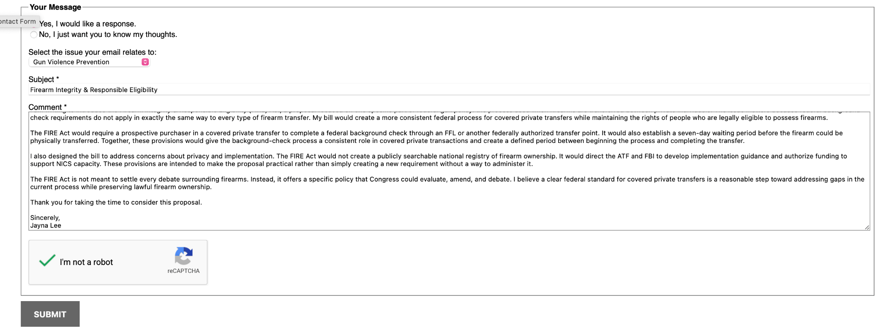

Dear Representative Peters,
My name is Jayna Lee, and I am a student at Canyon Crest Academy. As part of my House of Representatives Bill Project, I have researched firearm policy and developed the Firearm Integrity & Responsible Eligibility (FIRE) Act. Through this project, I wanted to examine how federal legislation could address gaps in the current firearm-transfer process while remaining practical and respectful of lawful firearm ownership.
I am writing to introduce the Firearm Integrity & Responsible Eligibility (FIRE) Act, a proposal focused on one specific part of federal gun policy: the process used when firearms are transferred between private individuals. The issue matters because federal background-check requirements do not apply in exactly the same way to every type of firearm transfer. My bill would create a more consistent federal process for covered private transfers while maintaining the rights of people who are legally eligible to possess firearms.
The FIRE Act would require a prospective purchaser in a covered private transfer to complete a federal background check through an FFL or another federally authorized transfer point. It would also establish a seven-day waiting period before the firearm could be physically transferred. Together, these provisions would give the background-check process a consistent role in covered private transactions and create a defined period between beginning the process and completing the transfer.
I also designed the bill to address concerns about privacy and implementation. The FIRE Act would not create a publicly searchable national registry of firearm ownership. It would direct the ATF and FBI to develop implementation guidance and authorize funding to support NICS capacity. These provisions are intended to make the proposal practical rather than simply creating a new requirement without a way to administer it.
The FIRE Act is not meant to settle every debate surrounding firearms. Instead, it offers a specific policy that Congress could evaluate, amend, and debate. I believe a clear federal standard for covered private transfers is a reasonable step toward addressing gaps in the current process while preserving lawful firearm ownership.
Thank you for taking the time to consider this proposal.
Sincerely,
Jayna Lee
Screenshot showing the completed contact form used to submit the letter to Representative Peters.
